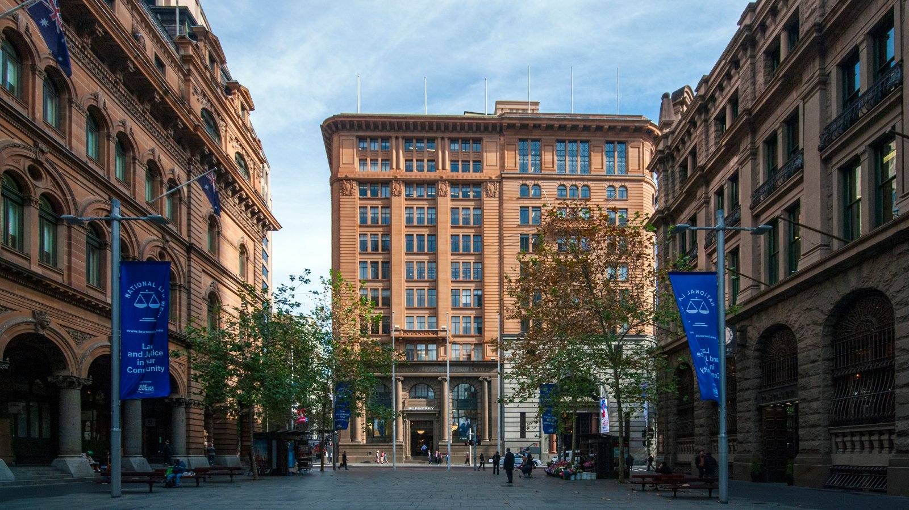

Our Vision
The Tajón Vision
Tajón shapes environments of lasting architectural, cultural, and human value. Spaces that restore meaning, presence, and pride in how we work.
Perspective
Tajón’s vision is not defined by products or offerings, but by how we approach the environments we create and steward.
It reflects a long-term view of work, culture and responsibility, shaped by architecture, design and the belief that places should endure beyond cycles, trends or immediate use.
Stewardship
Design With Responsibility
To create and steward environments of lasting architectural, cultural and human value.
Tajon exists to reimagine how people experience work — not as obligation, but as a place of meaning, connection and pride. Our environments are shaped by architecture, art and design, and grounded in the belief that where we work profoundly influences how we feel, think and perform.
